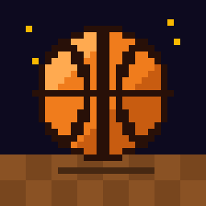

Support
Questions, bugs or ideas? Email jim.hollers@icloud.com. Include your iPhone model and iOS version if something isn't working.How to play
- Move and sprint
- Drag anywhere on the left side of the screen to move. Hold TURBO to sprint; the turbo bar refills when you let go.
- Shoot
- Hold SHOOT to jump and let go at the top of your jump for the best shot. Turbo + SHOOT near the rim throws down a dunk.
- Pass
- Tap PASS to pass to your teammate.
- Defense
- PASS tries a steal, SHOOT jumps to block, and Turbo + PASS shoves.
- Red hot
- Score three baskets in a row with one player and that player catches fire for the next few shots.
- Two players
- Pick CO-OP or VS on the title screen. Split the screen on one iPhone or connect game controllers.
- Coins and the Locker Room
- Games against the CPU earn coins. Spend them in the Locker Room on jerseys, shoes, balls and courts.
Purchases
Pro Shop items are optional one-time purchases tied to your Apple ID. On a new or reset iPhone, open the Pro Shop and tap Restore Purchases. Refunds are handled by Apple at reportaproblem.apple.com.
Game Center
Leaderboards and achievements use your Game Center account (Settings > Game Center). Only solo games against the CPU post wins and achievements.